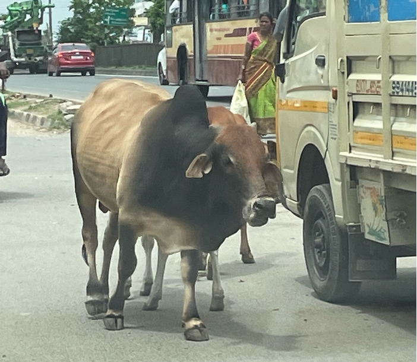
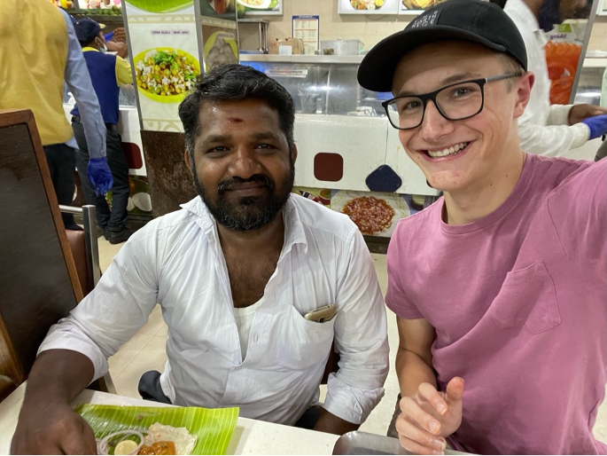
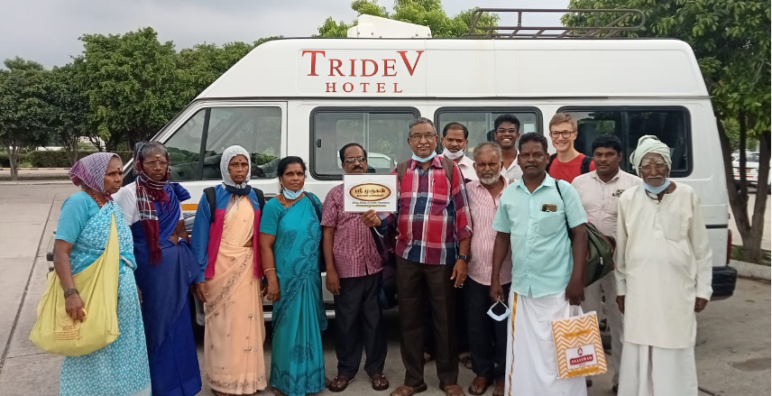

Introduction On Habitats On Conspicuity On Adolescence On Groups On Money On Logicstics On Pockets On Piety Appendix A: Glossary Appendix B: Varanasi Tour Roster Appendix C: Works Cited
I'm hosted with GitHub Pages
As our driver, Raja Anna (Anna is a title meaning older brother), walked me over to his light blue 2012 Toyota Etios, which is not sold in the American market, I had no idea what I was to encounter—both in the ultimate and in the proximate sense. In the proximate sense, I was about to ride in a vandi—the Tamil word for vehicle—in Indian traffic, which accounts for 10 percent of traffic fatalities worldwide. My ears detected the difference before my eyes did. Tamil drivers honk their horns more frequently than American drivers. As the drive continued, I observed that the horn was used in the same way an American biker might say “on your left” when passing a fellow biker. Except, in this case, the driver would be saying “on your right” since, in India, vandikal drive on the left side of the road—a remnant of British colonial rule. Unlike in America, where honking is considered an insult, honking was encouraged in India—most trucks had the words “sound horn” hand painted on the back of their trucks in English.
The term vandi describes not only cars but also motorcycles, pedal bikes, bike rickshaws, auto rickshaws (also called autos), trucks, and buses (which are also called perundhu). Bike rickshaws are bikes with a loveseat attached to their rear to taxi passengers. Autos are small open-air taxis that are capable of carrying sometimes as many as seven passengers and look like miniature yellow Volkswagen buses. The interplay of the different types of vandikal shapes the driving landscape. Cars are the fastest. Bikes are the most maneuverable. Perundhukal are neither fast nor maneuverable. When traffic is heavy, bikes weave through the other vandi. When traffic is light, bikes hug the right side of the road allowing other vandikal to pass. Like a valve increases water pressure by impeding the flow of water, trucks and perundhukal increase traffic pressure by impeding the flow of traffic.
The majority of vandikal are filled to maximum capacity—if not beyond. It is not unusual to see a motorcycle carrying 3 or more passengers. When driving around Tamil Nadu, we frequently sat 4 people in a backseat intended for 3 people. Crosswalks are nonexistent, so pedestrians need to dodge vandikal if they wish to cross the road. Humans are not the only creatures on the road—cows (maadu), goats (aadu), dogs (naai), and chickens (koli) often meander across the streets. Because Hindus revere maadukal as sacred, hitting a maadu with a car is a crime punishable by prison time.

Maadu in the road
Just as I thought I was becoming accustomed to Indian traffic, the median disappeared. Because vandi travel at different speeds, passing is a near constant. In America, we use double-yellow lines to indicate no passing zones. Tamil Nadu has no such zones. Passing occurs at the whim of the driver. Vandikal take any opportunity to budge in front of other vandikal—no matter how narrow the passing lane. Lane lines are relegated to the role of mere suggestions—vandikal frequently float between lanes. More than once, I was close enough to high-five the driver of the vandi next to us. Budging behavior is not unique to vandikal. At busy metropolitan temples, devotees swarmed the line to see the deity statue, frequently cutting in front of their fellow devotees. At the Kaal Bhairav Mandir Temple in Varanasi, a man behind me in line stood so close to me that whenever I moved forward, he moved forward so that his chest was touching my back. In America, budging is discouraged from a young age. In India, budging is the norm.
Raja Anna is probably the most talented driver I have met. His Toyota Etios has a yellow license plate, which means that he has passed the necessary checks and driving tests to qualify for special car and passenger insurance in the case of a crash. On the highway, Raja Anna would come across a large vandi traveling at a slow speed. He would then pull up directly behind the vandi with his right wheel just on the edge of the median line. Surveying the oncoming traffic, he would then make a split-second decision on whether to pass. If he chose to pass, he would honk to warn the vandi he was passing, manually switch gears, (yes, he was driving stick), rev the engine, and move into the oncoming traffic lane. As my line of sight from the passenger’s seat moved around the vandi in front of us, I would often catch sight of a vandi hurtling towards us at 80 kilometers per hour (that’s 48 miles per hour for my fellow Americans). The oncoming vandi would honk, flash its brights, and sometimes even move towards the shoulder of the road to avoid us. Raja Anna would accelerate, shifting gears as he did. Less than a second before a head-on collision, Raja Anna would swerve back into our original lane having successfully passed the slower vandi.

Raja Anna and me eating a meal together
I would be remiss not to note that vandikal from both directions of traffic were completing this maneuver simultaneously. Sometimes, we would return to our lane of traffic only to see another vandi hurtling towards us just as we had been mere seconds earlier. Other times, Raja Anna realized that he could not successfully complete the maneuver and returned to his spot behind the slow vandi. Still other times, we had to pass multiple vandikal at once. Sometimes, we had to pass a vandi while behind another vandi. Other times, the vandi we were passing would speed up to prevent us from passing. Raja Anna would perform a passing maneuver once every five minutes. After that first six-hour drive, my blood pressure was through the roof.
These idiosyncrasies of Indian itinerants are as much a product of culture as of economics. Aggressive driving generates what’s called a negative externality, meaning that it adversely impacts bystanders. My aggressive driving might endanger me a little bit, but it endangers the drivers around me even more. Negative externalities result because the person generating these externalities does not have enough of an incentive to stop their behavior. Aggressive driving helps me get where I need to go faster, so why should I stop? When multiple people generate the same negative externality, what results is called the tragedy of the commons. If every single person decides to drive aggressively, the road will be significantly more dangerous than if nobody chooses to drive aggressively, making everybody worse off—even though they are all acting in their own self-interest. This is where cultural rules and norms can play a role in mitigating negative externalities.
Traffic is a proxy for culture. Like traffic laws cannot regulate all aspects of the flow of traffic, rules and regulations cannot regulate all aspects of the flow of culture. Instead, culture and authority engage in a dance of reciprocal determinism, each impacting the operation of the other. Even though American and Indian traffic laws may look similar on the books, driver behavior—especially en masse—shapes how those laws are enforced. A police officer may be able to arrest one driver who is speeding, but it would be infeasible to arrest every single driver if they were all speeding. The same goes for mask policies. Even though Indian airports technically require masks, that rule goes unenforced because the majority of airline passengers—and even the majority of airport staff—flout that rule.
Certain rules are not a priority for certain cultures. In America, our neighborhood is composed of cookie-cutter houses of the same models and color schemes. Our homeowner association even tried to standardize the mailboxes in our neighborhood. My dad had to oppose this measure since we had recently purchased a mailbox that would not have complied with the policy. Most of Tamil Nadu does not enforce any such policies. Muthu’s cousins, Meenu and Ramu, recently designed and built their own house from scratch. The house is in the modern style with air conditioning, hardwood floors, and stowaway features. Right across the street is a house in the old Tamil style with an open-air atrium, tile flooring, and colonnades. These different styles make neighborhoods feel discordant relative to American neighborhoods.
In terms of norms, externalities are ingrained into Tamil culture. For example, litter is ubiquitous. One time, our tour guide Rahul asked for all of the trash in the van and simply threw it out the window. “Varanasi style,” he proudly explained to an incredulous Muthu and me. While the decision to litter might be convenient for the individual, the resulting pollution is detrimental to the collective. Another externality: people never put their phones on silent. Every time a person receives a call, their phone blares some Hindu hymn or Kollywood (Tamil cinema) movie soundtrack turned up to maximum volume. En masse, externalities like these contribute to increased noise pollution. Over time, these norms crystallize and become harder to change.
Granted, some of these decisions are driven by systemic factors. Road congestion might occur because of a lack of infrastructure rather than driver behavior. Litter might proliferate because of a lack of landfills rather than a plethora of litterbugs. People might not put their phones on silent because their phone lacks a physical silent button. That said, even if these systemic factors were addressed, the behaviors would likely still remain because of cultural inertia.
Another logistical feature subject to cultural pressure is timing. I have a penchant for punctuality. In my seven years of middle and high school, I never once received a late slip. My parents taught me to always arrive 5 minutes early to avoid any possibility of tardiness. I regarded the thought of being 5 minutes late as unconscionable. This unconscionable action only materialized in my nightmares—and not infrequently. Tardiness irks me. If my friends are more than 15 minutes late to a scheduled event, I go ballistic. I’ve learned to interpret their tardiness as a way of saying, “my time is more important than yours.” I’ve been culturally conditioned to expect punctuality as a social norm, a norm that was shattered in India.
According to Muthu, India Standard Time (IST), the time zone which supposedly governs India, is a figurehead. Instead, India operates under what he calls Indian Actual Standard Time (IAST). Muthu says that the first rule of IAST is that “start times are suggestions.” I first learned this rule of IAST when traveling with our tour group in Varanasi. Every member of the group besides Muthu and I was Tamil and over the age of 40. We nicknamed the men in our tour group after the 7 dwarves from Snow White and the women after the 4 March sisters from Little Women. Our tour guide, Rahul, told the group to meet in the lobby at 9am sharp to travel to the Triveni Sangam at Prayagraj. Muthu and I, the sprightly young Westerners, woke up at 8:30 and walked downstairs at 8:59 where we were greeted by an empty lobby. No other group members arrived to the lobby until 9:20, and our tour guide did not even arrive until 9:40! When we finally got on the road at 10am, I was incredulous. Our tour guide advised us that in the future, we ought to add at least 30 minutes to our expected departure time.

Our Varanasi tour group
The next day, we decided to take his advice. Our departure time for Gaya was slated for 3am. Muthu gauged that the general consensus was inclined towards punctuality since we had 7 hours of driving ahead. Muthu and I thought that there was no way that people would be more than 30 minutes late, so we decided to arrive at the more conservative 3:15. That day, we were greeted by another empty lobby, and we did not get on the road until 3:45. A group composed of Doc, Happy, Dopey, and Grumpy—affectionately called the Late Gang—were responsible for most of the delays.
Muthu says that the second rule of IAST is that “end times are suggestions too.” Our group members would always find a way to make our visit longer than it needed to be by forgetting to view a particular shrine, getting lost, or losing track of time. It didn’t matter if the Hindu temple we were visiting was large or small, busy or quiet, famous or obscure—we were always behind schedule. Even when our tour guide Rahul explicitly prohibited wandering outside of the Mahabodhi Buddhist Temple, the Late Gang wandered outside of the temple and delayed us a half-hour. Another time, a group composed of Bashful, Meg, Sleepy, Amy, and Jo got lost in Varanasi and we got delayed for an hour trying to find them.
As an economics enthusiast, I would be remiss not to explore how game theory can be applied to understand tardiness across cultures. Game theorists use simple games to model complex social phenomena. These games allow economists to use incentives to explain and predict human behavior—including tardiness.
Imagine a scenario where Aaron and Brian are meeting for lunch at noon. Aaron and Brian each have 2 options: to arrive on time or to arrive late. (For the sake of simplicity, I will assume that neither Aaron nor Brian wants to arrive early.) Aaron and Brian both want to minimize the amount of time delayed and the amount of time spent waiting. The optimal scenario occurs if both Aaron and Brian arrive on time—there is no delay and neither spends time waiting. If both arrive late, each person is only slightly worse off—their lunch is delayed but neither spends time waiting. If Aaron arrives on time but Brian arrives late, Aaron is doubly disappointed—his lunch is delayed and he has to wait—but Brian is slightly better off—his lunch is delayed but he does not have to wait. The converse would be true if Brian arrives on time but Aaron arrives late.
Aaron’s optimal decision depends on Brian’s optimal decision. Each player can either accept a delay to ensure that they don’t have to wait, or they can risk having to wait for the chance of having no delay. It all depends on how much they value punctuality, how much they dislike waiting, and how much they trust their friend to arrive on time.
Just like any discipline, economics must be explored in its proper cultural context. This game would play out differently if it were played by Arjun and Bhavik instead of Aaron and Brian. In countries like America, where punctuality is a social expectation, Aaron can be reasonably confident that Brad will be punctual, so he will choose to be punctual. Thus, expectations of punctuality beget punctuality. In America, there may also be negative social repercussions associated with tardiness. In countries like India, where tardiness is a social expectation, Arjun can be reasonably confident that Bhavik will be tardy, so he will choose to be tardy. Thus, expectations of tardiness beget tardiness.
In all of these cases: traffic, budging, noise pollution, litter, neighborhood design, and tardiness, culture exerts pressure on economic phenomena. Economic concepts like incentives, externalities, and game theory lay a nice groundwork for understanding human decision-making, but the impact of culture and inertia on these models must be brought to bear. Social norms shape which economic behaviors are considered acceptable, taboo, or normal, adjusting the incentive structure that individuals face. To borrow a phrase from Muthu, economic behavior on the subcontinent is characterized by “chaotic Indian logistics.”